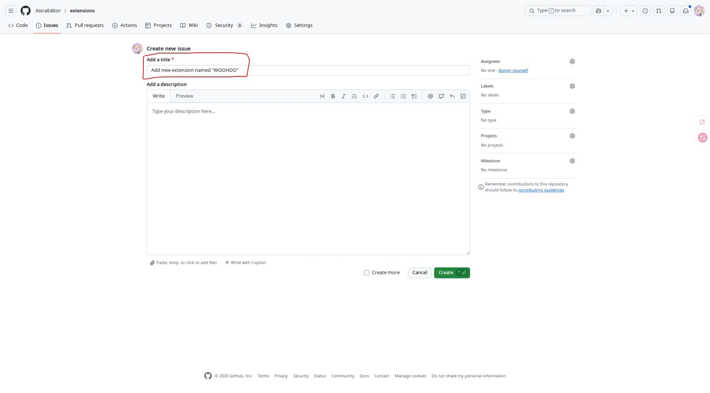
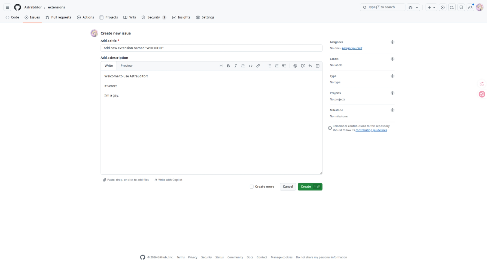
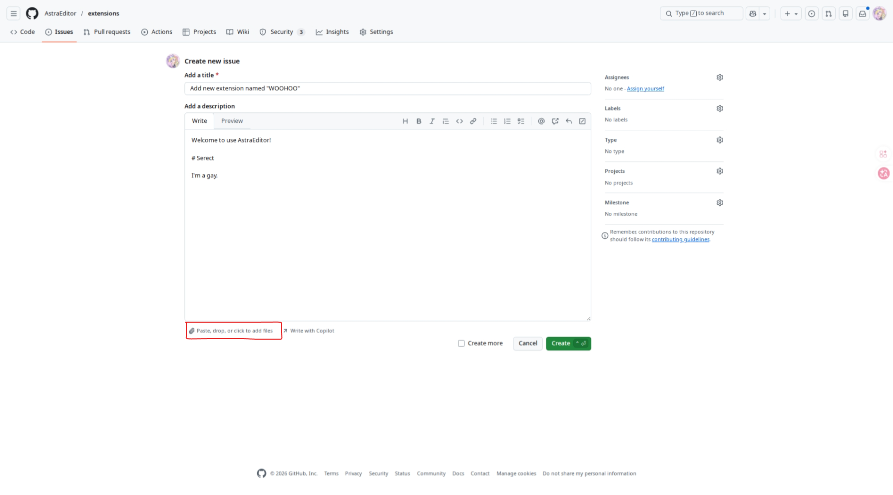
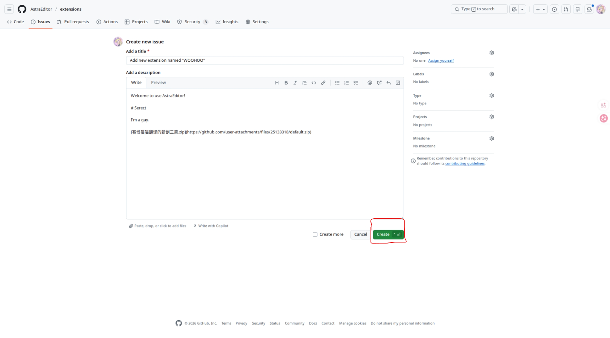

须知
我们采取 "Issues" 的方式让您更方便的提交扩展。 这需要你在提交扩展前有一个 Github账号 ，对于如何注册，请自行百度，这里不再赘述。
准备
审核
在您提交一个扩展前，务必确保您的扩展 可以正确运行 。我们会对您提交的扩展展开审核，包括但不限于：
- 扩展可以正确加载
- 所有添加的积木均可正确使用
- 不包含关于歧视、污秽语言、网络烂梗等语言、功能
- 没有过分的AI程度（100%由AI制作）
- 您能完全理解您编写的扩展（每一行代码）
审核的日期不定，但大多都能在一周内审核完成，请及时关注结果。
打包
您需要保证您提交的文件可以让别人看懂。我们规定了一个简单的目录，方便你我更快的检查和加入您的扩展：
扩展名.zip
|- main.js #您的扩展文件
|- featured.png #扩展的头图，在扩展库显示(你也可以上传svg格式的图片)
|- text.json #存放您的扩展信息
确保文件名正确
如果您提交的不满足我们的要求，我们可能会拒绝加入您的扩展。
下面我们会展开每个文件具体的规范。
main.js
这里存放您的扩展主文件，具体扩展该如何编写请参考其它扩展教程。
说回来，您的扩展开头应有以下内容：
// Name: 扩展名称 // ID: 扩展ID // Description: 扩展描述 // By: 作者 <链接> // By: 更多作者 <链接> (可选, 可添加更多个) // License: 许可证（MIT、GPLv3等）
这在此扩展库 是强制的，因为它涉及到实际的显示。
我们需要您将 Name 和 Description 写为英文，这需要作为默认文本于扩展库显示。
注意，对于多作者要用多个
// By:而不是逗号
此外，我们不要求您的内容包含国际化 。
featured.png(.svg)
这里是扩展的头图，也就是在扩展库展示的图片。 我们硬性 要求扩展图满足以下条件：
- 纵横比为 2:1
- 分辨率各不小于 600x300(如果是png)
- 有一个明确的代表，无论文字或图形（你甚至可以只写个扩展名上去）
我们也建议 您的扩展图可以：
- 不单调
- 美观（参考TurboWarp及其他扩展库扩展）
- 有一个明确清晰的主题色而不是炸裂非主流的渐变和AI生成
text.json
您可以复制这个示例并对其修改
{
"Name":{
"zh-cn":"扩展名"
...更多语言
},
"Description":{
"zh-cn":"扩展描述"
...更多语言
}
}
这里不需要添加英文，英文添加于
main.js中的Name和Description
我们硬性要求您的扩展格式包含以上二项，且 Name 和 Description
包含zh-cn。这对国际化很有帮助。
我们不要求您的扩展内容包含国际化。
准备
Issues
如上，我们使用Issues来作为提交介质。我们将展开提交步骤。
1.进入 Extensions库——Issues
进入此链接 https://github.com/AstraEditor/extensions/issues
2.发送 Issue
点击New issue。
 在Add a title下面的输入框输入类似
在Add a title下面的输入框输入类似
Add new extension named "扩展名"的文字让我们识别。

在Add a description处输入您想要告诉我们的信息，这不是必要的。
点击下方写着Paste, drop, or click to add files的按钮，导入您制作好的扩展文件（.zip）
等待导入完成，点击Create！
完成！现在只需等待我们进行审核并回复您！